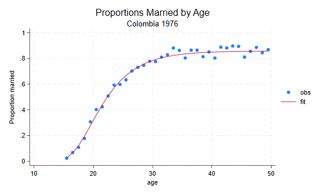

This section is a gentle introduction to programming Stata. I discuss macros and loops, and show how to write your own (simple) programs. This is a large subject and all I can hope to do here is provide a few tips that hopefully will spark your interest in further study. However, the material covered will help you use Stata more effectively.
Stata 9 introduced a new and extremely powerful matrix programming language called Mata, and Stata expanded the choice of languages by integrating Python in version 16 and Java in version 17. In addition, it is possible to write Stata plugins in C. All of these languages are beyond the scope of this introductory tutorial. Your efforts here will not be wasted, however, because these options are complementary to -not a complete substitute for- classic Stata programming.
To learn more about programming Stata I recommend Kit Baum’s An Introduction to Stata Programming, now in its second edition, and William Gould’s The Mata Book. You may also find useful Chapter 18 in the User’s Guide, referring to the Programming volume and/or the online help as needed. Nick Cox’s regular columns in the Stata Journal are a wonderful resource for learning about Stata. Other resources were listed in Section 1 of this tutorial.
A macro is simply a name associated with some text. Macros can be local or global in scope.
Local macros have names of up to 31 characters and are known only in the current context (the console, a do file, or a program).
You define a local macro using
local name [=] text and you evaluate it using
`name'. (Note the use of an opening backtick or left quote
and a closing straight quote.)
The first variant, without an equal sign, is used to store arbitrary text of up to ~64k characters (up to a million in Stata SE). The text is often enclosed in quotes, but it doesn’t have to be.
You need to run a bunch of regression equations that include a
standard set of control variables, say age,
agesq, education, and income. You
could, of course, type these names in each equation, or you could cut
and paste the names, but these alternatives are tedious and error prone.
The smart way is to define a macro
local controls age agesq education incomeYou then type commands such as
regress outcome treatment `controls'which in this case is exactly equivalent to typing
regress outcome treatment age agesq education income.
If there’s only one regression to run you haven’t saved anything, but if you have to run several models with different outcomes or treatments, the macro saves work and ensures consistency.
This approach also has the advantage that if later on you realize
that you should have used log-income rather than income as a control,
all you need to do is change the macro definition at the top of your do
file, say to read logincome instead of income
and all subsequent models will be run with income properly logged
(assuming these variables exist).
Warning: Evaluating a macro that doesn’t exist is not an
error; it just returns an empty string. So be careful to spell macro
names correctly. If you type
regress outcome treatment `contrls', Stata will read
regress outcome treatment, because the macro
contrls does not exist. The same would happen if you type
`control' because macro names cannot be abbreviated the way
variable names can. Either way, the regression will run without any
controls. But you always check your output, right?
Macro definitions may include other macros. For example we could
define age and then use it in controls:
local age "age agesq"
local controls `age' education incomeThe first ocurrence of age in the first line is the name
of the macro, and the second occurrence the name of a variable. I used
quotes to make the code clearer, but they are optional. Stata never gets
confused.
The macro age in the definition of controls
is resolved at the time the macro is defined, not when it is evaluated.
Therefore changing the contents of age at a later time will
not change controls. Suppose you run a few models and then
decide to control for age using age5, a factor variable
with age in five-year groups. You define local age i.age5.
The problem is that controls still has age and
agesq.
There is, however, a way to achieve that particular effect. The trick
is to escape the macro evaluation character when you define the outer
macro, typing local controls \`age' education income. Now
Stata does not evaluate the inner macro (but eats the escape character),
so the contents of controls becomes
`age' education income. When the controls
macro is evaluated, Stata sees that it includes the macro
age and substitutes its current contents.
In one case substitution occurs when the macro is defined, in the other when it is evaluated.
The second type of macro definition, local name = text
with an equal sign, is used to store results. It instructs
Stata to treat the text on the right hand side as an expression,
evaluate it, and store a text representation of the result under the
given name.
Suppose you just run a regression and want to store the resulting
R-squared, for comparison with a later regression. You know that
regress stores R-squared in e(r2), so you
think local rsq e(r2) would do the trick. Well, does
it?
Your macro stored the formula e(r2), as you can see by
typing display "`rsq'". What you needed to store was the
value. The solution is to type local rsq = e(r2), with an
equal sign. This causes Stata to evaluate the expression and store the
result.
To see the difference try this
. sysuse auto, clear (1978 automobile data) . quietly regress mpg weight . local rsqf e(r2) . local rsqv = e(r2) . di `rsqf' // this has the current R-squared .65153125 . di `rsqv' // as does this .65153125 . quietly regress mpg weight foreign . di `rsqf' // the formula has the new R-squared .66270291 . di `rsqv' // this guy has the old one .65153125
Another way to force evaluation is to enclose e(r2) in
single quotes when you define the macro. This is called a macro
expression, and is also useful when you want to display results. It
allows us to type display "R-squared=`rsqv'" instead of
display "R-squared=" `rsq'. (What do you think would happen
if you type display "``rsqf''"?)
An alternative way to store results for later use is to use
scalars (type help scalars to learn more.) This
has the advantage that Stata stores the result in binary form without
loss of precision. A macro stores a text representation that is good
only for about 8 digits. The downside is that scalars are in the global
namespace, so there is a potential for name conflicts, particular in
programs (unless you use temporary names, which we discuss later).
You can use an equal sign when you are storing text, but
this is not necessary, and is not a good idea if you are using an old
version of Stata. The difference is subtle. Suppose we had defined the
controls macro by saying
local controls = "age agesq education income". This would
have worked fine, but the quotes cause the right-hand-side to be
evaluated, in this case as a string, and strings used to be
limited to 244 characters (or 80 in Stata/IC before 9.1), whereas macro
text can be much longer. Type help limits to be reminded of
the limits in your version.
Global macros have names of up to 32 characters and, as the name indicates, have global scope.
You define a global macro using
global name [=] text and evaluate it using
$name. (You may need to use ${name} to clarify
where the name ends.)
I suggest you avoid global macros because of the potential for name conflicts. A useful application, however, is to map the function keys on your keyboard. If you work with a repository on GitHub, for example, try something like this
global F5 https://raw.githubusercontent.com/username/repositoryname/main
Then when you hit F5 Stata will substitute the full name. And you can
execute a do file in the repository using
do $F5/dofilename. (The use of a
/ makes it clear where the macro name ends, and we just
append the name of the do file.)
Obviously you don’t want to type this macro each time you use Stata.
Solution? Enter it in your profile.do file, a set of
commands that is executed each time you run Stata.
To learn where to store your profile type help profile
and then follow the link for your operating system, as there are some
differences between Windows, Mac and Unix computers.
Macros can also be used to obtain and store information about the system or the variables in your dataset using extended macro functions. For example you can retrieve variable and value labels, a feature that can come handy in programming.
There are also commands to manage your collection of macros,
including macro list and macro drop. Type
help macro to learn more.
Loops are used to do repetitive tasks. Stata has commands that allow looping over sequences of numbers and various types of lists, including lists of variables.
Before we start, however, don’t forget that Stata does a lot of looping all by itself. If you want to compute the log of income, you can do that in Stata with a single line:
gen logincome = log(income)This loops implicitly over all observations, computing the log of each income, in what is sometimes called a vectorized operation. You could code the loop yourself, but you shouldn’t because (i) you don’t need to, and (ii) your code will be a lot slower that Stata’s built-in loop.
The basic looping command takes the form
forvalues number = sequence {
... body of loop using `number' ...
}Here forvalues is a keyword, number is the
name of a local macro that will be set to each number in the sequence,
and sequence is a range of values which can have the
form
min/max to indicate a sequence of numbers from
min to max in steps of one, for example
1/3 yields 1, 2 and 3, orfirst(step)last which yields a sequence from
first to last in steps of size
step. For example 15(5)50 yields
15,20,25,30,35,40,45 and 50.(There are two other ways of specifying the second type of sequence,
but I find the one listed here the clearest, see
help forvalues for the alternatives.)
The opening left brace must be the last thing on the first line
(other than comments), and the loop must be closed by a matching right
brace on a line all by itself. The loop is executed once for each value
in the sequence with your local macro number (or whatever
you called it) holding the value.
Here’s my favorite way of creating dummy variables to represent age
groups. Stata 11 introduced factor variables and Stata 13 improved
the
labeling of tables of estimates, so there’s really no need to “roll your
own” dummies, but the code remains instructive.
forvalues bot = 20(5)45 {
local top = `bot' + 4
gen age`bot'to`top' = age >= `bot' & age <= `top'
}This will create dummy variables age20to24 to
age45to49. The way the loop works is that the local macro
bot will take values between 20 and 45 in steps of 5 (hence
20, 25, 30, 35, 40, and 45), the lower bounds of the age groups.
Inside the loop we create a local macro top to represent
the upper bounds of the age groups, which equals the lower bound plus 4.
The first time through the loop bot is 20, so
top is 24. We use an equal sign to store the result of
adding 4 to bot.
The next line is a simple generate statement. The first time through
the loop the line will say
gen age20to24 = age >= 20 & age <= 24, as you can
see by doing the macro substitution yourself. This will create the first
dummy, and Stata will then go back to the top to create the next
one.
The second looping command is foreach and comes in six
flavors, dealing with different types of lists. I will start with the
generic list:
foreach item in a-list-of-things {
... body of loop using `item' ...
}Here foreach is a keyword, item is a local
macro name of your own choosing, in is another keyword, and
what comes after is a list of blank-separated words. Try this
example
foreach animal in cats and dogs {
display "`animal'"
}This loop will print “cats”, “and”, and “dogs”, as the local macro
animal is set to each of the words in the list. Stata
doesn’t know “and” is not an animal, but even if it did, it wouldn’t
care because the list is generic.
If you wanted to loop over an irregular sequence of numbers –for example you needed to do something with the Coale-Demeny regional model life tables for levels 2, 6 and 12– you could write
foreach level in 2 6 12 {
... do something with `level' ...
}That’s it. This is probably all you need to know about looping.
Stata has five other variants of foreach which loop over
specific types of lists, which I now describe briefly.
Perhaps the most useful variant is
foreach varname of varlist list-of-variables {
... body of loop using `varname' ...
}Here foreach, of and varlist
are keywords, and must be typed exactly as they are. The
list-of-variables is just that, a list of existing
variable names typed using standard Stata conventions, so you can
abbreviate names (at your own peril), use var* to refer to
all variables that start with “var”, or type var1-var3 to
refer to variables var1 to var3.
The advantages of this loop over the generic equivalent
foreach varname in list-of-variables is that Stata checks
that each name in the list is indeed an existing variable name, and lets
you abbreviate or expand the names.
If you need to loop over new as opposed to existing
variables use
foreach varname of newlist list-of-new-variables. The
newlist keyword replaces varlist and tells
Stata to check that all the list elements are legal names of variables
that don’t exist already.
Two other variants loop over the words in a local or global macro;
they use the keyword global or local followed
by a macro name (in lieu of a list). For example here’s a way to list
the control variables from the section on local macros:
foreach control of local controls {
display "`control'"
}Presumably you would do something more interesting than just list the
variable names. Because we are looping over variables in the dataset we
could have achieved the same purpose using foreach with a
varlist; here we save the checking.
Stata also has a foreach variant that specializes in
lists of numbers (or numlists in Stataspeak) that can’t be
handled with forvalues.
Suppose a survey had a baseline in 1980 and follow ups in 1985 and 1995. (They actually planned a survey in 1990 but it was not funded.) To loop over these you could use
foreach year of numlist 1980 1985 1995 {
display "`year'"
}Of course you would do something more interesting than just print the
years. A numlist may be specified as 1 2 3, or
1/5 (meaning 1 2 3 4 5), or 1(2)7 (count from
1 to 7 in steps of 2 to get 1 3 5 7); type help numlist for
more examples.
The advantage of this command over the generic foreach
is that Stata will check that each of the elements of the list of
numbers is indeed a number.
In common with many programming languages, Stata also has a
while loop, which has the following structure
while condition {
... do something ...
}where condition is an expression. The loop executes as long as the condition is true (nonzero). Usually something happens inside the loop to make the condition false, otherwise the code would run forever.
A typical use of while is in iterative estimation
procedures, where you may loop while the difference in successive
estimates exceeds a predefined tolerance. Usually an iteration count is
used to detect lack of convergence.
The continue [,break] command allows breaking out of any
loop, including while, forvalues and
foreach. The command stops the current iteration and
continues with the next, unless break is specified, in
which case it exits the loop.
Stata also has an if programming command, not to be
confused with the ifqualifier that can be used to
restrict any command to a subset of the data, as in
summarize mpg if foreign. The
ifcommand has the following structure
if expression {
... commands to be executed if expression is true ...
}
else {
... optional block to be executed if expression is false ...
}Here if and the optional else are keywords,
and expression is a logical condition (type
help exp for an explanation of expressions). The opening
brace { must be the last thing on a line (other than
comments) and the closing brace } must be on a new line by
itself.
If the if or else parts consist of a single
command they can go on the same line without braces, as in
if expression command. But
if expression { command } is not legal. You could use the
braces by spreading the code into three lines, and this often improves
readability of the code.
So here we have a silly loop where we break out after five of the possible ten iterations:
forvalues iter=1/10 {
display "`iter'"
if `iter' >= 5 continue, break
}And with that, we break out of looping.
We now turn to the fun task of writing your own Stata commands.
Follow along as we develop a few simple programs, ending with an
egen extension to evaluate the Coale-McNeil model
nuptiality schedule, so we can create a plot like the figure below.

There is a long tradition that the first program one writes in a new language is “Hello World!”. The simplest way to develop a new program is to start with a do file:
capture program drop hello
program define hello
version 14
display as text "hello, world"
endThat’s it. If you now type hello Stata will say “hello,
world”, in lowercase, with a comma, and without an exclamation mark,
just as Brian Kernighan’s original.
The program drop statement is needed in case we make
changes and need to rerun the do file, because you can’t define an
existing program. The capture is needed the very first
time, when there is nothing to drop.
The version is set to 14 so that users of earlier
versions of Stata can run the program. (I will do that for all programs
in this section, as they do not rely on more recent features.)
All Stata output goes through SMCL, pronounced “smickle” and short for Stata Markup Control Language. SMCL uses plain text combined with commands enclosed in braces. Below we use a bit of SMCL to frame this inmortal sentence
. capture program drop hello
. program define hello
1. version 14
2. display "{txt}{c TLC}{hline 14}{c TRC}"
3. display "{c |} hello, world {c |}"
4. display "{c BLC}{hline 14}{c BRC}"
5. end
. hello
┌──────────────┐
│ hello, world │
└──────────────┘
Here {txt} sets the style to text (as opposed to input,
error or result), {c TLC} and its cousins are used to draw
top-left, top-right, bottom-left and bottom-right corners,
{hline 14} draws a horizontal line 14 characters long, and
{c |} draws a tall |. To learn more about SMCL
type help smcl. This will be essential to write a help file
for your commands.
To make useful programs you will often need to pass information to
them, in the form of “arguments” you type after the command. Let’s write
a command that echoes what you say. I used to call it echo,
but now Stata has its own (undocumented) echo program, so we’ll call it
parrot. (Stata reserves all english words, so you have to
be careful naming your programs. You can check if the name is taken by
typing which followed by the name, in our case
which parrot.)
capture program drop parrot
program define parrot
version 14
display "`0'"
endTry typing parrot hello, world to see what happens.
When you call a command Stata stores the arguments in a local macro
called 0. We use a display command with `0' to
evaluate the macro. The result is text, so we enclose it in quotes.
(Suppose you typed parrot hi, so the local macro
0 has hi; the command would read
display hi and Stata will complain, saying ‘hi not found’.
We want the command to read display "hi", which is why we
code display "`0'".)
If we don’t specify anything, the local macro 0 will be
an empty string, the command will read display "" and Stata
will print a blank line.
Before we go out to celebrate we need to fix a small problem with our
new command. Try typing parrot The hopefully "final" run.
Stata will complain. Why? Because after macro substitution the
all-important display command will read
display "The hopefully "final" run"The problem is that the quote before final closes the initial quote,
so Stata sees this is as "The hopefully " followed by
final" run", which looks to Stata like an invalid name.
Obviously we need some way to distinguish the inner and outer
quotes.
Incidentally you could see exactly where things went south by typing
set trace on and running the command. You can see in (often
painful) detail all the steps Stata goes through, including all macro
substitutions. Don’t forget to type set trace off when you
are done. Type help trace to learn more.
The solution to our problem? Stata’s compound double quotes:
`" to open and "' to close, as in
`"compound quotes"'. Because the opening and closing
symbols are different, these quotes can be nested. Compound quotes
So our program must display `"`0'"'. Here’s the final
version.
program define parrot
version 14
if `"`0'"' != "" display as text `"`0'"'
endYou will notice that I got rid of the capture drop line.
I also used display as text to make sure we print using the
text style. For error messages you may want to use
display as error instead. Type help display to
learn more about this command.
We are now ready to save the program as an ado file.
Type sysdir to find out where your personal ado directory
is, and then save the file there with the name parrot.ado.
The command will now be available any time you use Stata.
In addition to storing all arguments together in local macro
0, Stata parses the arguments (using white space as a
delimiter) and stores all the words it finds in local macros
1, 2, 3, etc.
Typically you would do something with `1' and then move
on to the next one. The command mac shift comes handy then,
because it shifts all the macros down by one, so the contents of
2 is now in 1, and 3 is in
2, and so on. This way you always work with what’s in
1 and shift down. When the list is exhausted 1
is empty and you are done.
So here is the canonical program that lists its arguments
capture program drop listargs
program define listargs
version 14
while "`1'" != "" {
display `"`1'"'
mac shift
}
endDon’t forget the mac shift, otherwise your program may
run forever. (Or until you hit the break key.)
Try listargs one two three testing. Now try
listargs one "two and three" four. Notice how one can group
words into a single argument by using quotes.
This method is useful, and sometimes one can given the arguments more
meaningful names using args. We will give an example in
5.3.8. But let us discuss Stata syntax first, a more powerful and robust
approach.
(By the way one can pass arguments not just to commands, but to
do files as well. Type help do to learn more.)
If your command uses standard Stata syntax –which means the arguments
are a list of variables, possibly a weight, maybe an if or
in clause, and perhaps a bunch of options– you can
take advantage of Stata’s own parser, which conveniently stores all
these elements in local macros ready for you to use.
Let us write a command that computes the probability of marrying by a certain age in a Coale-McNeil model with a given mean, standard deviation, and proportion marrying. The syntax of our proposed command is
pnupt age, generate(married) [ mean(25) stdev(5) pem(1) ]So we require an existing variable with age in exact years, and a mandatory option specifying a new variable to be generated with the proportions married. There are also options to specify the mean, the standard deviation, and the proportion ever married in the schedule, all with defaults. Here’s a first cut at the command
capture program drop pnupt
program define pnupt
version 14
syntax varname, Generate(name) ///
[ Mean(real 25) Stdev(real 5) Pem(real 1) ]
// ... we don't do anything yet ...
endThe first thing to note is that the syntax command looks
remarkably like our prototype. That’s how easy this is.
The first element in our syntax is an example of a list of
variables or varlist. You can specify minima and
maxima, for example a program requiring exactly two variables would say
varlist(min=2 max=2). When you have only one variable, as
we do, you can type varname, which is short for
varlist(min=1 max=1).
Stata will then make sure that your program is called with exactly
one name of an existing variable, which will be stored in a local macro
called varlist. (The macro is always called
varlist, even if you have only one variable and used
varname in your syntax statement.) Try
pnupt nonesuch and Stata will complain, saying “variable
nonesuch not found”.
(If you have done programming before, and you spent 75% of your time
writing checks for input errors and only 25% focusing on the task at
hand, you will really appreciate the syntax command. It
does a lot of error checking for you.)
Optional syntax elements are enclosed in square brackets
[ and ]. In our command the
generate option is required, but the other three are
optional. Try these commands to generate a little test dataset with an
age variable ranging from 15 to 50
drop _all
set obs 36
gen age = 14 + _nNow try pnupt age. This time Stata is happy with
age but notes ‘option generate() required’. Did I say
syntax saves a lot of work? Options that take arguments
need to specify the type of argument (integer,
real, string, name) and,
optionally, a default value. Our generate takes a
name, and is required, so there is no default. Try
pnupt age, gen(2). Stata will complain that 2 is not a
name.
If all is well, the contents of the option is stored in a local macro
with the same name as the option, here generate.
Now we need to do just a bit of work to check that the name is a
valid variable name, which we do with confirm:
confirm new variable `generate'Stata then checks that you could in fact generate this variable, and
if not issues error 110. Try pnupt age, gen(age) and Stata
will say ‘age already defined’.
It should be clear by now that Stata will check that if you specify a
mean, standard deviation or proportion ever married, abbreviated as
m(), s() and p(), they will be
real numbers, which will be stored in local macros called
mean, stdev, and pem. If an
option is omitted the local macro will contain the default.
You could do more checks on the input. Let’s do a quick check that all three parameters are non-negative and the proportion is no more than one.
if (`mean' <= 0 | `stdev' <= 0 | `pem' <= 0 | `pem' > 1) {
di as error "invalid parameters"
exit 110
}You could be nicer to your users and have separate checks for each parameter, but this will do for now.
We are now ready to do some calculations. We take advantage of the relation between the Coale-McNeil model and the gamma distribution, as explained in Rodríguez and Trussell (1980). Here’s a working version of the program
program define pnupt
*! Coale-McNeil cumulative nuptiality schedule v1 GR 24-Feb-06
version 14
syntax varname, Generate(name) [Mean(real 25) Stdev(real 5) Pem(real 1)]
confirm new var `generate'
if `mean' <= 0 | `stdev' <= 0 | `pem' <= 0 | `pem' > 1 {
display as error "invalid parameters"
exit 198
}
tempname z g
gen `z' = (`varlist' - `mean')/`stdev'
gen `g' = gammap(0.604, exp(-1.896 * (`z' + 0.805)))
gen `generate' = `pem' * (1 - `g')
end We could have written the formula for the probability in one line,
but only by sacrificing readability. Instead we first standardize age,
by subtracting the mean and dividing by the standard deviation. What can
we call this variable? You might be tempted to call it z,
but what if the user of your program has a variable called
z? Later we evaluate the gamma function. What can we call
the result?
The solution is the tempname command, which asks Stata
to make up unique temporary variable names, in this case two to be
stored in local macros z and g. Because these
macros are local, there is no risk of name conflicts. Another feature of
temporary variables is that they disappear automatically when your
program ends, so Stata does the housekeeping for you.
The line gen `z' = (`varlist' - `mean')/`stdev' probably
looks a bit strange at first. Remember that all names and values of
interest are now stored in local macros and we need to evaluate them to
get anywhere, hence the profusion of backticks: `z' gets
the name of our temporary variable, `varlist' gets the name
of the age variable specified by the user, `mean' gets the
value of the mean, and `stdev' gets the value of the
standard deviation. After macro substitution this line will read
something like gen _000001 = (age-22.44)/5.28, which
probably makes a lot more sense.
You might consider allowing the user to specify if and
in conditions for your command. These would need to be
added to the syntax, where they would be stored in local macros, which
can then be used in the calculations, in this case passed along to
generate.
For a more detailed discussion of this subject type
help syntax and select if and then
in. The entry in help mark is also
relevant.
Sometimes all your command will do is create a new variable. This, in
fact, is what our little command does. Wouldn’t it be nice if we could
use an egen type of command like this:
egen married = pnupt(age), mean(22.48) stdev(5.29) pem(0.858)Well, we can! As it happens, egen is user-extendable. To
implement a function called pnupt you have to create a
program (ado file) called _gpnupt, in other words add the
prefix _g. The documentation on egen extensions is a bit
sparse, but once you know this basic fact all you need to do is look at
the source of an egen command and copy it. (I looked at
_gmean.)
So here’s the egen version of our Coale-McNeil
command.
program define _gpnupt
*! Coale-McNeil cumulative nuptiality schedule v1 GR 24-Feb-06
version 14
syntax newvarname=/exp [, Mean(real 25) Stdev(real 5) Pem(real 1)]
if `mean' <= 0 | `stdev' <= 0 | `pem' <= 0 | `pem' > 1 {
display as error "invalid parameters"
exit 198
}
tempname z g
gen `z' = (`exp' - `mean')/`stdev'
gen `g' = gammap(0.604, exp(-1.896 * (`z' + 0.805)))
gen `typlist' `varlist' = `pem' * (1 - `g')
end There are very few differences between this program and the previous
one. Instead of an input variable egen accepts an
expression, which gets evaluated and stored in a temporary variable
called exp. The output variable is specified as a
varlist, in this case a newvarname. That’s why
z now works with exp, and gen
creates varlist. The mysterious typlist is
there because egen lets you specify the type of the output
variable (float by default) and that gets passed to our
function, which passes it along to gen.
We are ready to reveal how the initial plot was produced. The data are available in a Stata file in the datasets section of my website, which has counts of ever married and single women by age. We compute the observed proportion married, compute fitted values based on the estimates in Rodríguez and Trussell (1980), and plot the results. It’s all done in a handful of lines
. use https://grodri.github.io/datasets/cohhnupt, clear (WFS Colombia Household Survey) . gen agem = age + 0.5 . gen obs = ever/total . egen fit = pnupt(agem), mean(22.44) stdev(5.28) pem(.858) . twoway (scatter obs agem) (line fit agem), /// > title(Proportions Married by Age) subtitle(Colombia 1976) /// > ytitle(Proportion married) xtitle(age) . graph export cohhnup.png, width(550) replace file cohhnup.png saved as PNG format
The actual estimation can be implemented using Stata’s maximum likelihood procedures, but that’s a story for another day.
So far our commands have printed results or created a new variable.
How do you return results to the user? A general command can declare
itself to be rclass and then return results in
r(), while an estimation command can declare
eclass and return results in e(). Let us
illustrate the former with a command to compute Tukey’s trimean T =
(Q1 + 2 Q2 + Q3)/4, a weighted average
of the quartiles and median.
. capture program drop trimean
. program trimean, rclass
1. version 14
2. args varname
3. confirm variable `varname'
4. quietly summarize `varname', detail
5. if r(N) == 0 {
6. display as error "No observations"
7. exit
8. }
9. tempname trimean
10. scalar `trimean' = (r(p25) + 2*r(p50) + r(p75))/4
11. display "trimean = ", `trimean'
12. return scalar trimean = `trimean'
13. end
The first thing to notice is that the program statement
includes the rclass option. This is required to be able to
return results.
We then use args to name the single argument
varname, and we then use confirm variable to
check that the variable exists. The quartiles we need are computed by
summarize with the detail option, which we do
quietly to skip printing the results. If the variable is a
string or all values are missing, summarize will set
r(N) to 0, in which case we display an error message and
exit.
We could store the trimean in a local macro, but we will lose
precision. Instead we use a scalar. The tempname line will
store a unique name in the local macro trimean. We then
store the trimean in a scalar with that name, and print it. The final
step uses the return statement to store the scalar result
in r(trimean). Let us run the program and then list the
results
. sysuse auto, clear
(1978 automobile data)
. trimean mpg
trimean = 20.75
. return list
scalars:
r(trimean) = 20.75
Each rclass command erases the results of the previous
one. However we could use return add to add our results to
what’s on r() already. Try it. After running our command,
return list will list 20 results, ready for inclusion in a
customized table.
We could expand the program to more variables, perhaps using
syntax varlist, but note that summarize only
stores results for the last variable listed, and our command should
probably do the same.
To keep this tutorial from becoming too long I have skipped or cut
short many topics. To learn more about returning results from your
commands type help return. For estimation commands, which
can post estimation results to e(), see
help ereturn and help _estimates. An essential
reference on estimation is Maximum Likelihood Estimation with
Stata, Fourth Edition, by Gould, Pitblado and Poi (2010).
Other subjects of interest are matrices (start with
help matrix), and how to make commands “byable” (type
help byable). To format your output you need to learn more
about SMCL, start with help smcl. For work on graphics you
may want to study class programming (help class) and learn
about sersets (help serset). To provide a graphical user
interface to your command try help dialog programming. It
is also possible to read and write text and binary files (see
help file).
The biggest omission here is Mata, a full-fledged matrix programming language that was introduced in Version 9 of Stata. Mata is compiled to byte code, so it is much faster than Stata’s classic ado programs. I find that the best way to write new Stata commands is to use classic ado for the user interface and Mata for the actual calculations. If you are interested in learning Mata I strongly recommend Gould’s (2018) The Mata Book.
Continue with References